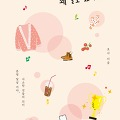
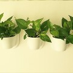
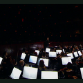
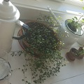
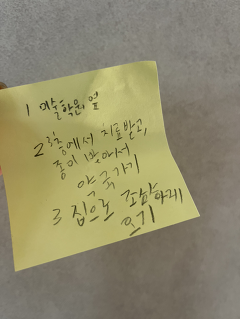
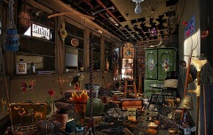
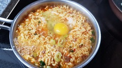
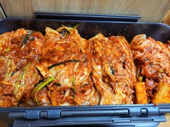
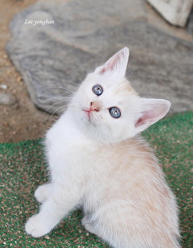

글이 작품이 되는 공간, 브런치
브런치에 담긴 아름다운 작품을 감상해 보세요. 그리고 다시 꺼내 보세요.
서랍 속 간직하고 있는 글과 감성을.
BRUNCH KEYWORD
키워드로 분류된 다양한 글 모음
- 지구한바퀴
세계여행 - 그림·웹툰
- 시사·이슈
- IT
트렌드 - 사진·촬영
- 취향저격
영화 리뷰 - 오늘은
이런 책 - 뮤직 인사이드
- 글쓰기
코치 - 직장인
현실 조언 - 스타트업
경험담 - 육아
이야기 - 요리·레시피
- 건강·운동
- 멘탈 관리
심리 탐구 - 디자인
스토리
- 문화·예술
- 건축·설계
- 인문학·철학
- 쉽게 읽는
역사 - 우리집
반려동물 - 멋진
캘리그래피 - 사랑·이별
- 감성
에세이
writers
브런치 추천 작가
-
경욱
기획자
낮에는 귤과 생강을 팔고 밤에는 글과 생각을 팝니다. 답 없는 세상에서 나름의 답을 찾기위해 발버둥 치는 중인데요. 어떤 삶을 살지는 몰라도 제 앞길이 무지개라고 믿고 삽니다.책경영··· -
이대표
이대표유니버스 크리에이터
이대표유니버스, 이대표입니다. 커리어튜터를 통해 이직 상담과 콘텐츠, 그 밖의 여러가지 일에 관심있고 도전하고 있습니다.책직장··· -

OOJOO
프리랜서 강연자
디지털 기술이 사회와 산업 그리고 기업과 개인에 가져다 주는 변화와 이에 대한 대응 방안을 고민하고 연구하고 있습니다.책IT···
-

안녕안녕
에세이스트
글을 쓰며 울기도, 웃기도 합니다. 글을 보며 이해하기도, 사랑하기도 하고요. 최근, 카페 사장이 되었습니다.책에세이··· -

김지수
칼럼니스트
뉴욕에서 두 자녀와 함께 살고 있습니다. 다채로운 뉴욕 문화와 자연에 관심이 많아 매일 답사하고 기록하고 있습니다.책직장··· -

yuki
카피라이터
한국에서 카피라이터로 14년 일했고 캐나다에서 24년째 살고 있다. 빈티지컬렉션과 요리, 인테리어, 살림을 사랑하지만 활동적인 편이 아니라서 여행이나 운동에는 별로 관심이 없다.책해외 생활···
-
포말하우트
카카오 포토그래퍼
밤하늘을 탐험하는 탐험가취미과학··· -
몬스테라
변호사
국선전담변호사로 형사사건 변론만 하고 있습니다.취미책··· -

숨결
회사원
상상하고 글을 쓰다 보면 다른 세계를 만날 수 있다고 믿는 주말 작가, 에세이 작가취미심리···


-

보니
기획자
맛있는 술, 일상의 기록, 건강한 생활, 그리고 초록색과 여름밤을 좋아합니다. 부지런히 일을 꾸미고 몸을 움직이며 살고 있습니다.취미에세이··· -

트레비 매거진
트래비매거진 크리에이터
월간 여행매거진 트래비의 브런치입니다. 트래비 기자들이 취재한 다양한 여행 정보를 브런치를 통해 만나실 수 있습니다.취미직장··· -

김바롬
출간작가
김바롬. 작가. 산문집 '나는 작가입니다, 밥벌이는 따로 하지만'취미해외 생활···


-

김송희
에세이스트
빅이슈코리아 편집장, 대중문화 및 잡다한 에세이 씀. <미운 청년 새끼> 공저. 문의- grimgle@naver.com방송문학··· -

윤직원
일러스트레이터
짧툰 그리는 방송 노동자. 직장인 생활툰 『윤직원의 태평천하』를 연재 중입니다.방송그림··· -

올드팝 그리고 가요
지구 출간작가
시트콤 순풍산부인과에서 라디오 그리고 팟캐스트까지 두루두루 경험한 현실밀착형 작가. 90년대 음악과 pop 그리고 술을 사랑하고 친구가 될 준비가 되어 있는 지구인입니다방송음악···


-
행복한 이민자
감독
쫌 더 재밌는 걸 만들 때까지방송에세이··· -

하성태의 시네마틱
기자
'얼지마, 죽지마, 부활할거야'. 어제는 영화기자, 오늘은 프리랜서 기자 및 시나리오 작가. 기고 청탁 작업 의뢰는 woodyh@hanmail.net방송영화··· -

명교
프리랜서
시나리오 쓰는 사람입니다. 연락은 lee4071@daum.net으로 해 주세요.방송영화···


recommended articles
브런치의 다양한 글을 만나보세요.
-
강수지 언니가 부러웠을 뿐인데
나는 빈혈이 있다. 어릴 땐 안 그랬는데 5년 전부터 생리할때만 되면 너무 어지럽고 심할 땐 걸을 수도 없었다. 그 때는 그냥 생리 전 증후군이겠거니 하고 넘겼는데 생리할때가 아닌데도 메슥거리고 티비에 나오는 것처럼 픽 쓰러지는 바람에 병원에 갔다가 알았다. ‘오 마이 갓! 내가 빈혈이라니’ 내가 어릴 땐 드라마에 종종 빈혈인 여주인공들이 나왔었는데by
민작가

스타벅스에서 톨 사이즈 주문하다 까여본 적 있나요?
맥시멀 리스트 남편이 또 뭔가를 샀다. 사촌 집에서 본 크롬캐스트를 사서 HBO로 요즘 핫하다는 <듄>을 봤다. 아주 먼 미래의 이야기라 주인공이 걸어 다니면 조명이 따라다닌다. 티모시가 나오는데도 불구하고 나는 중간에 박차고 나왔다. 아이맥스로 봐야 재밌다는 걸 집에서 봐서 그런 걸까? 이런 대단한 세계관을 가진 멋진 영화보다 나는 솔직히 올리버 쌤의by
보리차
아홉 살 아이 혼자 병원에 갔다
지난주 가족들과 경주여행을 다녀왔다. 일교차가 심한 날씨라 옷도 여러 개 챙기고 매 시간마다 조끼를 입다가 패딩을 입다가 하며 지냈다. 경주의 가을은 아름다웠고 평소와 달리 걸을 길이 많았다. 그리고 호텔의 공기는 건조했다. 기관지가 약한 아이가 아프기 딱 좋은 조건이었다. 여행이 끝날 즈음 진해진 콧물은 주말 내내 아이를 괴롭혔다. 아이는 일기를 시로by
초원의빛
엄마가 버리기 시작했다
동생 오기 3주 전 미국에 살고 있는 동생은 휴가를 오기 전부터 엄마에게 집을 치워 놓으라고 신신당부를 했다. 정리 유전자가 없는 엄마는 알겠다 대답하고, 나름 매일 10리터짜리 쓰레기 봉투 하나씩을 꽉꽉 채워 내놓았다. 하지만 수십년간 쌓아온 집안 곳곳의 쓰레기를 다 내보내기엔 역부족이었다. 그러다가 엄마집에 일이 있어 갔더니 그 사이 당근마켓의by
리리산책
-

자꾸 선을 넘는 녀석
코로나를 넘어 위드 코로나의 시대, 외출과 만남이 허용된 백신 접종 완료자인데도 이상하게 일이 주일 마음이 힘들었다. 한동안 나아졌던 불면증도 돌아왔다. 모두가 잠이 든 시간, 혼자 깨어 어둠을 응시하는 것은 힘든 일이다. 그 시간에는 언제나 즐거운 일이 아니라 슬프고 화나고 힘든 일만 생각나기 때문이다. 다른 생각하려고 해도 어린 시절의 아픈 기억들이 머 드라마에 종종 빈혈인 여주인공들이 나왔었는데by
써니

맛과 정이 넘치는, 제주 모슬포 대정오일시장
대정읍에는 두 개의 시장이 있다. 모슬포중앙시장과 닷새마다 대정오일시장이 그것이다. 대정읍내 복판에 자리한 모슬포중앙시장은 상설이지만 점포 수가 채 50개가 안 되는 소형시장이다. 게다가 인근에 대형마트들이 산재해 있어 시장 안은 늘 조용한 편이다.하지만, 매달 1, 6일로 끝나는 날이 되면 대정읍이 들썩거린다. 제주도 서부지역에서 제일 크다는 대정오일장이by
트래비 매거진

요즘 초딩이 노는 법
우리 큰 아이 학교는 등교 수업과 온라인 수업을 병행하고 있다. 온라인 수업 시에는 줌(Zoom)이라는 매체를 사용하는데 1년 넘게 사용하다 보니 우리 아이를 비롯한 다른 아이들도 모두 능숙하게 사용하는 편이다. 줌 사용 초창기에 큰 아이는 나에게 회의실을 개설한 후 호스트를 자기에게 넘겨 달라고 했다. 아이가 선생님이고 내가 학생이었다. 아이는 선생님이by
JOO
조퇴한 아들에게 죽과 라면을 끓여줬다.
"띠리리리리~~~~!!!" 폰이 울린다. 액정을 보니 . . <1호 담임 선생님> . . 지금 시간은 수업이 한창 중인 11시 30분 일과 중 담임선생님의 연락은 언제나 심장을 뛰게 한다. . . 아이가 배가 아파서 조퇴를 한다고 한다. "네~~~! 선생님 알겠습니다. 지금 가겠습니다. 감사드립니다." 바람의 속도로 학교를 달려갔다.by
반짝반짝 빛나는
-

모닝빵 재발견
막내가 좋아하는 모닝빵을 골랐다. 나란히 2개씩 5줄, 열 개의 빵이 가지런히 비닐봉지에 담겼다. 조금만 힘을 가하면 납작 호떡이 되어 버릴 것 같다. 조금 전 서점에서 산 큰아이의 기말고사 영어 문제집과 과학잡지 사이에 눌려버릴까 조심조심했다. 집 현관문을 열어 식탁 위에 장바구니가 놓일 때까지 지금의 모양이 변하지 않아야 한다. 찌그러진 모닝빵은 다 쓴by
오진미
시어머님의 눈물
지금은 11월 16일 새벽 한 시! 마음이 따끔따끔 해, 잠을 이루지 못하고 노트북 앞에 앉았습니다. 김장을 80킬로나 했는데도 말이죠... 예전 같으면 일찍이 잠들었을 시간인데 이렇게 잠 못 들고 좌판을 두드립니다.. 왜냐고 물어보시네요.. 이 번 토요일이 아버님 하늘에 계시고 처음으로 맞는 생신인데요.... 어머님이 제사상에 김장김치를 꼭 놓고 싶어by
김현미
처음부터 끝판왕!
처음부터 끝판왕! (여행 가서 저녁까지 일정 빡빡하게 잡아놨는데, 아침부터 너를 만나면 에라 모르겠다, 오늘 일정은 여기서 끝.)by
이용한